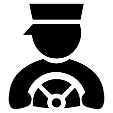

<!--
  Generated template for the IntroPage page.

  See http://ionicframework.com/docs/components/#navigation for more info on
  Ionic pages and navigation.
-->
<ion-header>

  <ion-navbar align-title="center">
    <ion-title>QuickCab</ion-title>
  </ion-navbar>

</ion-header>
<br>
<br>
<br>
<br>
<br>
<br>
<ion-content class="login-background" padding>
<!--<div class="row">
    <button ion-button clear color="light" LARGE>
    <ion-icon name="key"></ion-icon>
    Driver
    </button>
</div>-->
<h2 style="color:white;">Welcome To QuickCab Services</h2>
<button ion-button color="light"  >
    <div class="grid-full">
      <ion-row>
          <ion-col>
               
            </ion-col>
        <ion-col>
          <div class="center-text">
            Customer
            </div>
          
        </ion-col>
      </ion-row>
    </div>
  </button>
  <button ion-button color="light" (click)="opendriver()">
      <div class="grid-full">
        <ion-row>
            <ion-col>
                 
              </ion-col>
          <ion-col>
            <div class="center-text">
              Driver
              </div>
            
          </ion-col>
        </ion-row>
      </div>
    </button>


</ion-content>


